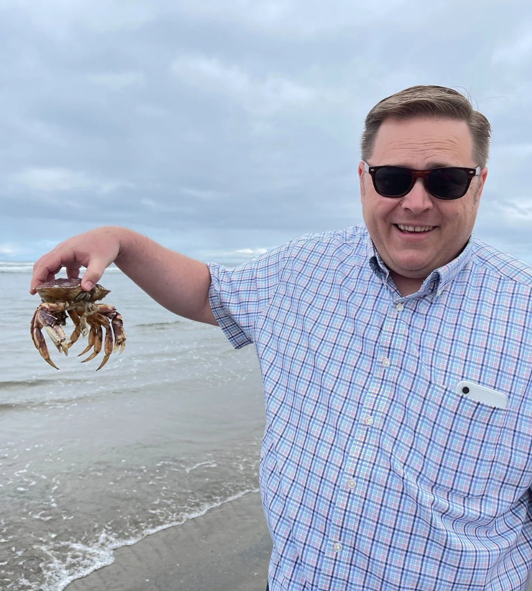
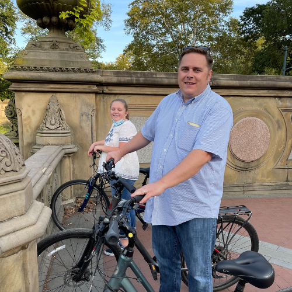
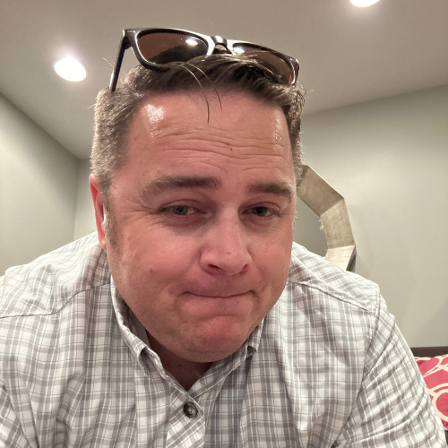
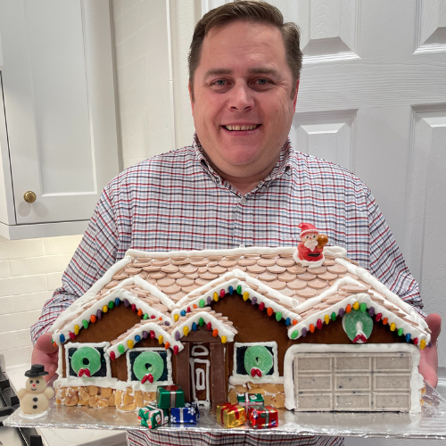

Enthusiastic Leader | Marketing Consultant | Process Improvement | Storyteller
I’m a product marketing leader recognized for developing scalable processes and strategies to drive growth and adoption. I have over 25 years of experience in product marketing, including storytelling, sales and marketing operations, marketing technology, and customer-facing sales roles, both as a leader and as an individual contributor.
My work is centered on driving revenue, not just activity, because at the end of the day, our revenue growth is the number that matters the most. By aligning marketing strategy with sales outcomes, improving pipeline efficiency, and building scalable systems, I’ve consistently delivered measurable impact across revenue growth, customer expansion, and campaign performance.
Marketing must be built from the customer’s perspective. We are not our audience. Understanding buyer needs, decision paths, information sources, and motivations is essential to creating marketing that actually works.
Lead volume is important, but so are revenue velocity and lead quality. A lower-volume channel that produces faster, higher-converting deals is often more valuable than high-volume sources with slow or weak conversion.
Marketing success is not defined by opens, clicks, or traffic. Those are inputs, not outcomes. True performance is measured in SQLs, pipeline creation, and ultimately closed revenue.
Marketing’s primary customer is revenue-facing teams like sales and client success. When marketing is effective, these teams perform better. Revenue growth, customer satisfaction, and renewals are the validation.
New content has value, but most assets are more useful over time than they are on day one. Repurposing often outperforms reinvention in both speed and effectiveness. The same applies to leads. Re-engagement and reconversion can be high-yield sources of revenue.
What it’s like to work with me, from those who have.
Lead scoring and lifecycle stages were inconsistent, making it difficult to prioritize leads or understand funnel performance.
Clean data and clear definitions are prerequisites for any meaningful revenue strategy.
Pipeline sources were being evaluated based on volume, not revenue impact or speed to close. Revenue opportunities were missed by ignoring a strategic approach.
Volume and velocity both contribute to a healthy revenue stream.
Marketing is my focus. From market research and understanding our ideal customer profile, to developing the strategy for how we take our product to prospects and clients, I have deep expertise in all aspects of Product Marketing. Here are selected examples of projects I’ve executed in prior roles. This is not my complete body of work, but does provide a representation of my skills. Click an image to see the sample.
With over 25 years of experience in marketing, I’m what is known as a T-shaped marketer. That means I have broad experience across all areas of the marketing stack. While I operate broadly across the marketing stack, my strongest expertise is in connecting customer insight, messaging, and go-to-market execution to measurable revenue outcomes.
No matter what tool is in your marketing toolbox, I have a wide range of experience across many of the most common programs used by marketers and company teams for enhancing coordination and measuring marketing efforts.
Notable accomplishments and awards.
I’d love to hear from you! Reach out and ask me a question, or just say hello. I promise this is the only crabby thing about me.
+1 (801) 859-7961steven.ostler@gmail.comWhy Hire Steve? (bit.ly/whyhireveo)
Thanks for sticking around for the “after the credits” content. Here’s a little bit more about me when I’m not geeking out about marketing.
I love food and cooking, even if it means building a scale model gingerbread version of my house.


